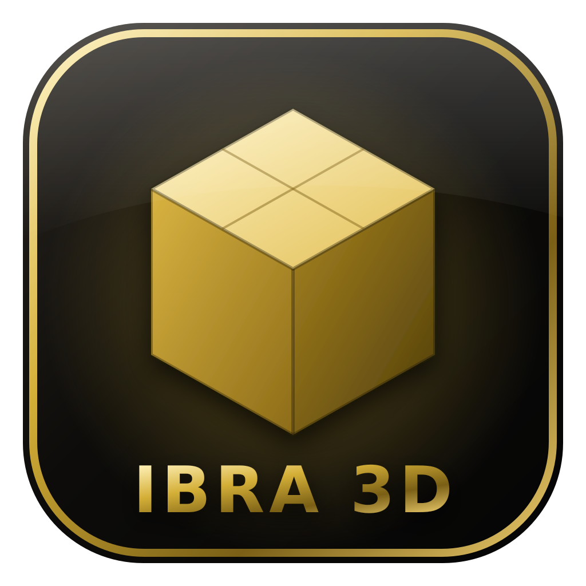

3D
حط صورة جسم واحد بخلفية بسيطة، والتطبيق يحولها لمجسم GLB تكدر تستخدمه بألعابك.

حط صورة جسم واحد بخلفية بسيطة، والتطبيق يحولها لمجسم GLB تكدر تستخدمه بألعابك.
بدون توكن، Hugging Face يعطي عدد تحويلات قليل يومياً. سوّي حساب مجاني على huggingface.co، وروح Settings ← Access Tokens، وسوّي توكن نوع Read وحطه هنا. ينحفظ مشفّر على حاسبتك بس، وما ينرسل لأي مكان غير Hugging Face.
تحويل الصور الى مجسمات ثلاثية الأبعاد بصيغة GLB — مجاني بالكامل
برمجة وتطوير ابراهيم الخزرجي
ibraprogram.netlify.app · t.me/ibraprogram · TikTok: ibraprogram
المحركات: Hunyuan3D 2.1 و Hunyuan3D 2 (Tencent) و TRELLIS.2 (Microsoft) عن طريق Hugging Face Spaces. كل محرك له رخصته الخاصة.